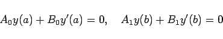
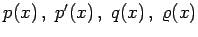
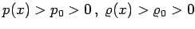
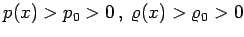
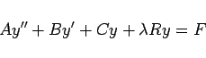
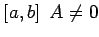
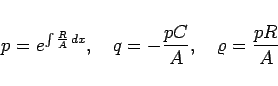
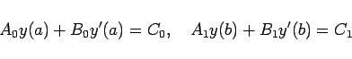

Inhalt Index DeskTop Bronstein

 Differentialgleichungen Gewöhnliche Differentialgleichungen Randwertprobleme Problemstellung
Differentialgleichungen Gewöhnliche Differentialgleichungen Randwertprobleme Problemstellung


Selbstadjungierte Differentialgleichung wird die folgende wichtige Form der Differentialgleichungen 2. Ordnung genannt:
Als lineare Randbedingungen werden die homogenen Bedingungen
|  | (9.64b) |
vorgegeben. Die Funktionen  und f(x) sollen in dem endlichen Intervall  stetig sein. Im Falle eines unendlichen Intervalls ändern sich die Ergebnisse ganz wesentlich (s. Lit. 9.5). Außerdem wird verlangt, daß  gilt. Die Größe
stetig sein. Im Falle eines unendlichen Intervalls ändern sich die Ergebnisse ganz wesentlich (s. Lit. 9.5). Außerdem wird verlangt, daß  gilt. Die Größe  , ein Parameter der Differentialgleichung, ist konstant. Für f =0 ergibt sich zum inhomogenen Randwertproblem das zugehörige homogene Randwertproblem.
, ein Parameter der Differentialgleichung, ist konstant. Für f =0 ergibt sich zum inhomogenen Randwertproblem das zugehörige homogene Randwertproblem.
Jede Differentialgleichung 2. Ordnung
|  | (9.64c) |
kann, falls in  ist, durch Multiplikation mit p/A auf die selbstadjungierte Form (9.64a) gebracht werden. Dazu sind die Substitutionen
|  | (9.64d) |
erforderlich.
Um eine Lösung zu finden, die den inhomogenen Bedingungen
|  | (9.64e) |
genügt, geht man auf eine Aufgabe mit homogenen Bedingungen, aber geänderter rechter Seite der Differentialgleichung, zurück, indem man die unbekannte Funktion mit Hilfe der Substitution y =z + u ersetzt. Dabei ist u eine beliebige, zweimal differenzierbare Funktion, die die inhomogenen Randbedingungen erfüllt, während z eine neue unbekannte Funktion ist, die die zugehörigen homogenen Randbedingungen erfüllt.